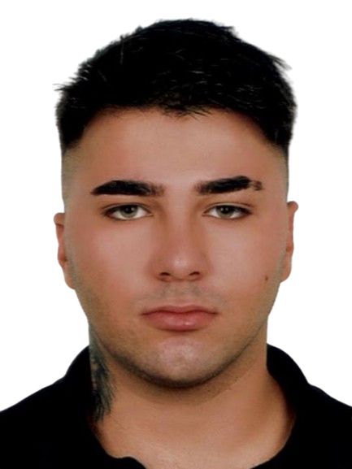

BALICAN35

Underground Rap Sanatçısı & Söz Yazarı
Buca, İzmir · Türkiye
Hakkımda
BALICAN35, İzmir'in Buca ilçesinden yükselen bağımsız bir Türkçe rap
sanatçısı ve söz yazarıdır. Underground rap kültüründen ve sokak
atmosferinden beslenen sanatçı, müziğinde karanlık altyapılara, güçlü
ritimlere, hızlı flow'a ve dikkat çeken sözlere yer veriyor.
Rap müziği kişisel anlatımın ve kendine özgü bir tarz oluşturmanın
aracı olarak gören BALICAN35, bağımsız üretimlerini sürdürerek
dinleyicilerle buluşturmayı hedefliyor. İzmir underground rap sahnesinde
kendi müzikal kimliğini oluşturmaya odaklanıyor.
Diskografi
- Sokak Sanatı2026 · Single
- Çok Sustuk2026 · Single